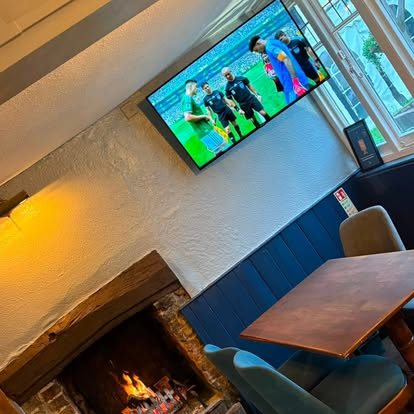

Food & Drink
Freshly cooked, made to be enjoyed
Hearty pub favourites, stone-baked pizzas and proper Sunday roasts — cooked from scratch with locally sourced ingredients and served with a smile.
From our kitchen
The menu
A taste of what we serve. Our menus change with the seasons and the day's fresh produce, so please pop in or call 01296 613532 for today's full selection and prices.
From behind the bar
Something for everyone
As a Charles Wells house we take our beer seriously. You'll find Eagle IPA on at all times, alongside rotating guest ales kept in tip-top condition. Not a beer drinker? There's a well-chosen wine list, classic cocktails, ciders and plenty of soft options too.
